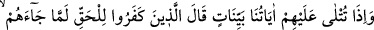
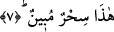

Adam dikkatli bakınca yükün devenin sırtından bir karış yukarıda olduğunu gördü.
Onun/devenin bu ağırlıktan hiç haberi yoktu. Adam: “Subhânallâh, ne acayip iş” dedi.
Bâyezid: “Hakîkati sizden gizlediğimde melâmet dilini uzatıyorsunuz, hakîkati size
gösterdiğimde ise bu sefer de buna tâkat getiremiyorsunuz. Size ne yapmalı bilmiyorum”
dedi. Sonra Medîne’ye gidip burayı ziyaret etti. Annesinin hizmetine dönmesi
gerektiğine dâir emir alınca bir cemaatle birlikte Bistâm’ın yolunu tuttu. Geleceği
haberi duyulunca bütün Bistâm halkı onu karşılamaya çıktı. Kendisine yaklaştıklarında
Şeyh entarisinin altından bir çörek çıkardı. Ramazan ayı idi, çöreği yemeğe başladı.
Halk onu bu halde görünce ondan yüz çevirdiler. Şeyh arkadaşlarına: “Gördünüz mü
şerîata dâir bir meseleyi bu şekilde uygulayınca bütün halk beni reddetti” dedi.
Fakîr (Bursevî) der ki: Bâyezîd Bistâmî’nin muradı insanları kendinden nefret ettirip
uzaklaştırmak, kendisini Allah’tan meşgul etmemelerini sağlamaktır. Çünkü sâliki
Allah’tan meşgul eden her şey onun düşmanıdır. Hangi hile ve çarelerle olursa olsun
kişi düşmandan kaçınmalıdır. İşte Ramazan’da gündüzleyin oruç yemek bu maksada
vesile sayılmıştır. Şâyet “mübârek Ramazan’da gün ortasında yemek yemekle
Ramazan’ın hürmet ve saygınlığı ihlâl edilmiş oldu bu nasıl câiz olur” dersen ben de
şöyle derim:
Bunun iki türlü îzahı vardır. 1. Birincisi Bâyezîd bunlarla karşılaşınca bu belayı
başından def ve bertaraf edecek başka bir çare bulamadı, kerhen orucunu bozdu. Sonra
keffâretle bunu telafî etti. Bu şekilde Allah katında kabul ve ünsiyet sağlayarak büyük
bir iş başarmış oldu. Ayrıca Bâyezîd bu durumda şâyet misafir idiyse kendisine keffâret
de gerekli değildir. Çünkü misafir Ramazanda oruç tutup tutmamakta muhayyerdir,
ruhsatlıdır. Bazıları “bu makamda âdeten çirkin olan bir iş işlemektedir. Şâyet imkân
varsa böyle bir şey yapmaması uygundur. Çünkü şerîatın zâhirinin korunması vâciptir,”
derler.
2. Bâyezîd bu durumda görünüşte iftar etmiş, fakat gerçekte iftar etmemiştir. Çünkü o
bu durumda orucu bozacak unsuru yok edip ortadan kaldırmaya muktedir idi. Yani
görünürde yemek yerken hakikatte boğazından orucu bozacak bir şey geçmiyordu. Ki
Melâmiyye’nin durumu budur. Bunun bir benzeri şarab içmektir. Çünkü şarapta Allah’ın
kişiye verdiği kudret ve tasarrufla eşyanın hakikat ve maddelerinin değişmesi esasına
dayalı bir özelliği vardır. Şâyet kişi şarabı istihâle etmeye muktedir ise şarap boğaza
ulaştığında bal olur. Fakat böyle şeyler mânen zayıf olan insanlarda müşâhede edilir.
Kâmil ve kuvvetli olanlarda olmaz. Çünkü bunlar cidden şeriatın zâhirine muhâlif bir
davranış içine girmezler. Allah’tan bizi korumasını diliyoruz.